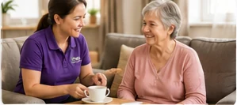
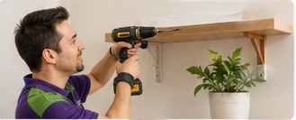
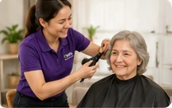

Flexible support designed around you
Choose the services that match your goals, preferences and NDIS plan.

Personal Care
Respectful support with showering, dressing, grooming, hygiene, mobility, transfers and daily routines.
- Showering, dressing and grooming
- Personal hygiene and toileting
- Mobility, transfers and routines

Community Participation
Support to enjoy appointments, shopping, cafés, parks, events, hobbies and meaningful social connections.
- Shopping and appointments
- Cafés, parks and community events
- Hobbies, recreation and social connection

Transport Assistance
Reliable transport support for appointments, therapy, shopping, education, work and community activities.
- Medical and therapy appointments
- Shopping, work and education
- Social and recreational activities

Household Tasks
Practical help with cleaning, laundry, bed linen, meal preparation, shopping and household organisation.
- Cleaning, laundry and linen
- Meal preparation and grocery shopping
- Household organisation

Daily Living Skills
Build confidence with cooking, budgeting, shopping, time management, communication and public transport.
- Cooking and meal planning
- Budgeting and shopping skills
- Communication and public transport

Respite & Overnight Support
Flexible in-home, planned respite, sleepover and overnight support tailored to individual needs.
- Planned respite
- Sleepover and active overnight support
- Flexible support for families and carers

Home Maintenance
Assistance with minor home tasks, furniture assembly, basic gardening and everyday maintenance.
- Minor household jobs
- Furniture assembly
- Basic gardening and organisation

In-Home Hairdressing
Convenient haircuts, washing, colouring and basic styling, subject to qualified staff availability.
- Haircuts and washing
- Basic styling
- Colouring subject to availability

Free Consultation
A friendly, no-obligation consultation of up to two hours to understand your goals and support needs.
- Up to two hours
- Discuss your goals and NDIS plan
- Help finding another provider when needed
Not sure which support is right?
Our free consultation gives you time to ask questions without pressure.
Social & Recreational Activities
Enjoy fishing, walking, exercise, creative activities, community events and interests that matter to you.
- Fishing, walking and exercise
- Arts, music and local events
- Building confidence and friendships
Ask About This Service